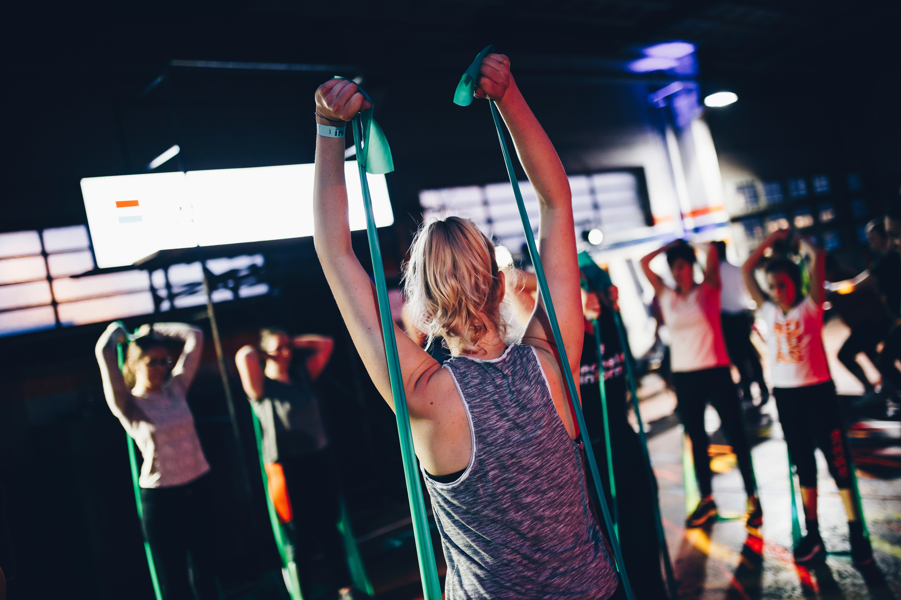
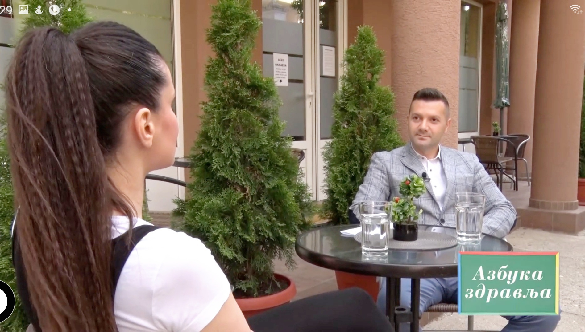
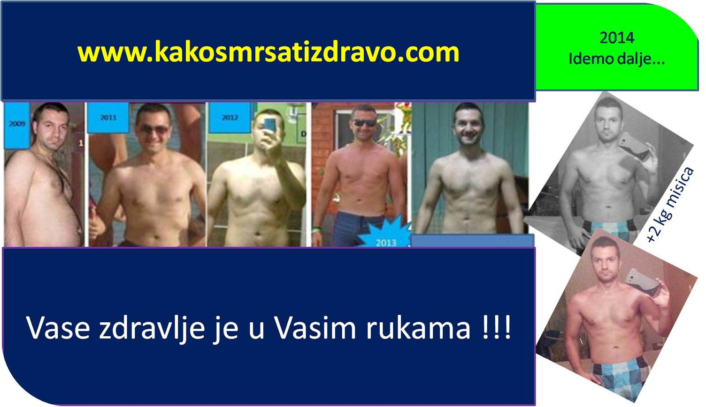
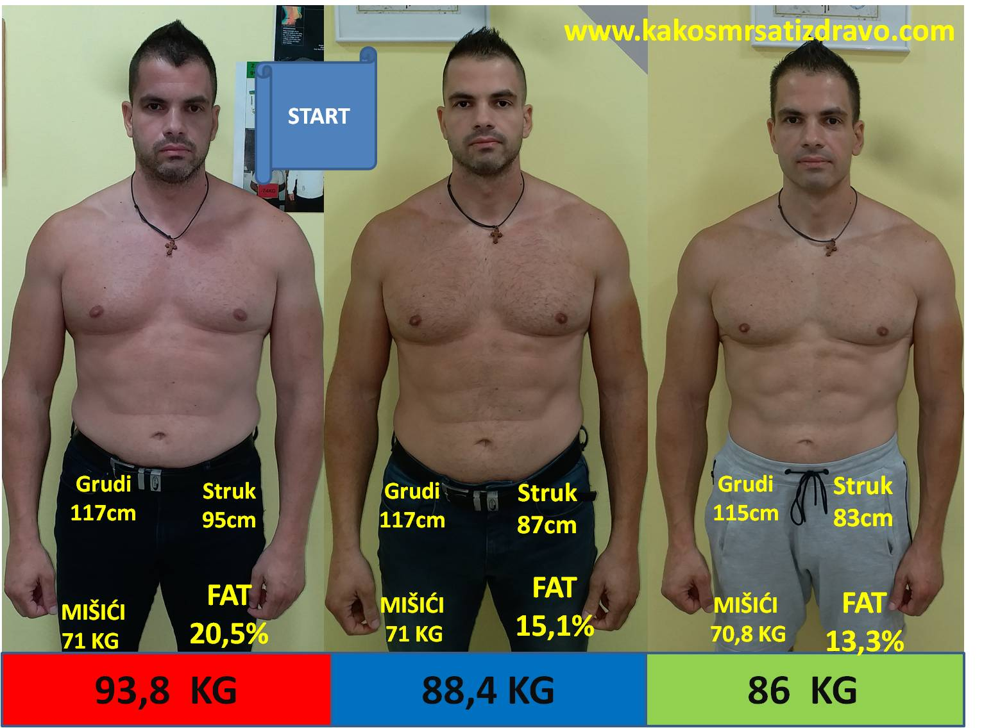
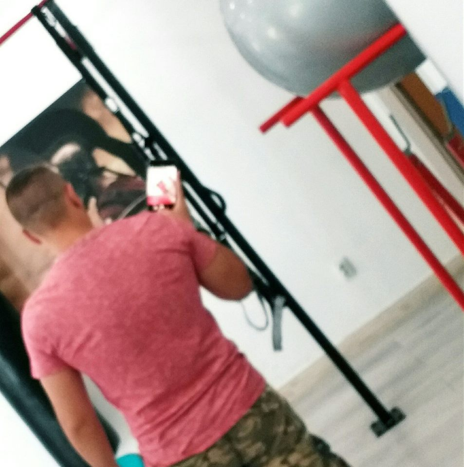
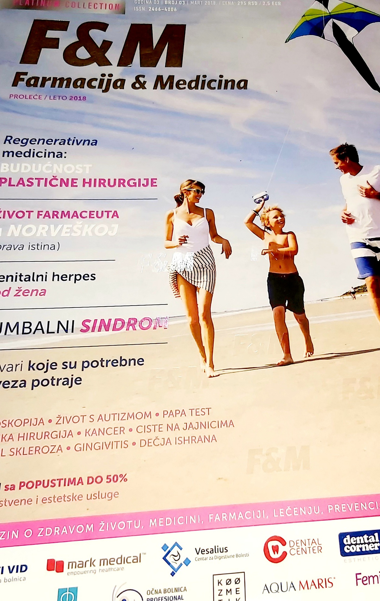
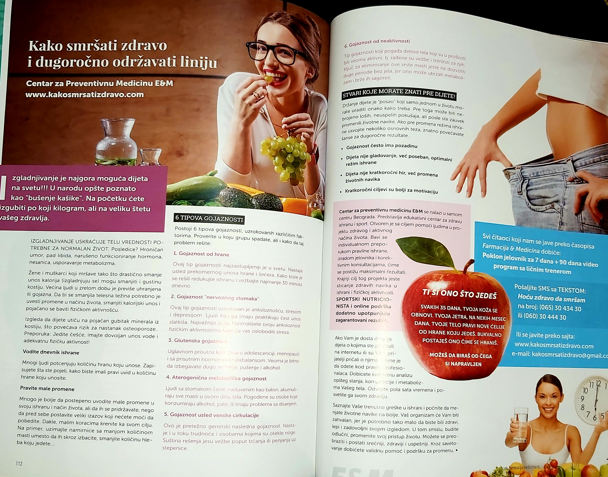

Restriktivne dijete
Jelovnik od hiljadu i dvesta kalorija izdržite dve nedelje. Onda telo uspori metabolizam, glad postane jača od volje i sve se vrati - često sa viškom.


Studio za zdrav život E&M, Beograd. Nutricionističko savetovanje i online edukacija o ishrani i sportu.



Većina ljudi zna šta bi trebalo da jede. Problem nastane kada opšti jelovnik naleti na stvaran život - posao, smene, porodicu i navike koje se ne menjaju preko noći. Prebacite prekidač i pogledajte kako to rešavamo.
Jelovnik od hiljadu i dvesta kalorija izdržite dve nedelje. Onda telo uspori metabolizam, glad postane jača od volje i sve se vrati - često sa viškom.
Postoji šest tipova gojaznosti, a u opticaju je jedan te isti jelovnik za sve. Ono što je pomoglo koleginici kod vas ne mora da pomeri ništa.
Brojka na vagi ne kaže da li ste izgubili salo ili mišiće. Bez merenja telesnog sastava radite naslepo i lako izgubite ono što ste hteli da sačuvate.
Krećemo od vašeg dana i obroka koje već jedete. Menjamo redosled, količine i izbor namirnica tako da plan možete da izdržite i posle šest meseci.
Prvo utvrdimo koji od šest tipova gojaznosti vas opisuje, pa tek onda pravimo plan ishrane i fizičke aktivnosti - za vaše telo, a ne za prosek.
Pratimo procenat masti, mišićnu masu i obime, ne samo kilograme. Tako vidite šta se stvarno menja i na vreme korigujemo ono što ne radi.
Na početku izgubite par kilograma, a onda se sve vrati, često sa kamatom. Telo pri drastičnom smanjenju kalorija prvo troši mišiće, usporava metabolizam i gubi minerale iz kostiju.
Zato se posle svake ovakve dijete osećate umornije nego pre nje.
Postoji šest različitih tipova gojaznosti i svaki traži drugačiji pristup. Zato univerzalni jelovnik sa interneta retko radi duže od mesec dana - jednostavno nije pravljen za vaš problem.
Plan ishrane koji držite godinama, ne mesec dana pred more. Idemo korak po korak, prema vašem tipu gojaznosti.
Fizička aktivnost je deo svakog plana, ali prilagođena vremenu koje realno imate - ne satima u teretani koje niko ne stigne da izdrži.
Šargarepa, krastavac i paprika, malo maslinovog ulja i limuna. Priprema traje deset minuta, jede se uz svaki glavni obrok.
Ceo receptSavet: povrće secite neposredno pre jela - tako zadržava vitamine i hrskavost.
Piletinske grudi, tikvice, paprika i malo začina. Jedan tanjir, dvadeset minuta, dovoljno za sit stomak bez težine.
Ceo receptSavet: napravite duplu količinu - sutradan je odličan ručak koji ne morate da smišljate.
Ovas, malo mleka po izboru, sezonsko voće i šaka oraha. Doručak koji drži do ručka bez potrebe za grickalicama.
Ceo receptSavet: pahuljice možete uveče preliti mlekom i ostaviti u frižideru - ujutru je doručak gotov.
Nebojša je krenuo sa 93,8 kilograma i strukom od 95 santimetara, uz 20,5% masti. Nije gladovao ni skraćivao obroke.
Za nekoliko meseci stigao je do 86 kilograma, struk 83 santimetra, mast 13,3%. Mišićna masa mu je ostala skoro ista, oko 71 kilogram - nije izgubio snagu, izgubio je salo.
Pre ovoga sam probala svaku dijetu koja mi je došla do ruku i uvek sam se vraćala na staro. Ovde niko nije tražio da gladujem - samo smo prošli kroz moj dan i sredili obroke. Kilogrami su krenuli dole sami od sebe.
Najviše mi je značilo to što se sve meri. Vidim crno na belo koliko sam masti izgubio, a koliko mišića sam zadržao. To me je držalo kada rezultat na vagi nije bio onakav kakav sam očekivao.
Radim u smenama i mislila sam da za mene nema šanse. Napravili smo plan koji radi i kada završim posao u deset uveče. Posle četiri meseca ne samo da imam manje kilograma, nego i više energije.
Gostovanja u emisiji Azbuka zdravlja i tekstovi u magazinu Farmacija i Medicina - svuda ista priča: dijeta nije gladovanje, nego promena navika koje možete da izdržite.


Pozovite ili pošaljite mejl. Prvi razgovor traje petnaestak minuta - kažete mi gde ste sada, ja kažem da li i kako mogu da pomognem.
Pozovite sada